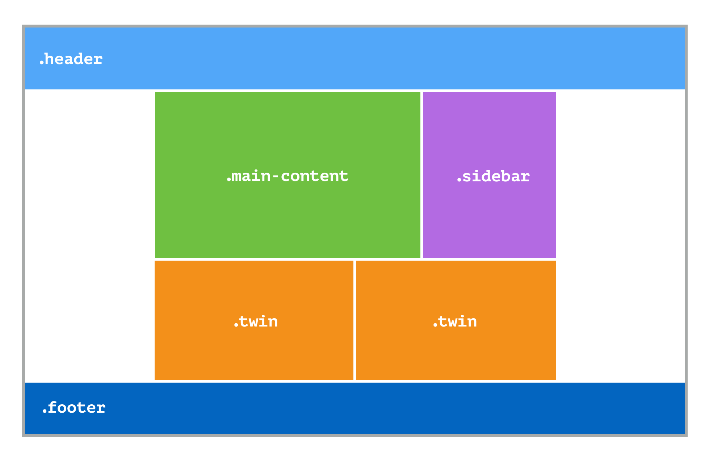

Hvorfor trenger vi CSS Layouts?
Nettopp fordi vi må style nettsiden vår. Vi har forskjellige metoder å gå fram på, og noen av de er CSS Grid, CSS Flexbox og vi kan også lage en hel webside med kun float. Med CSS Grid er det lett å sette opp en hel nettside. Man kan også ha "nested elements" som gjør at du kan lage ting veldig nøyaktig. Flexbox er mye av det samme, men har mange "sub-properties" som er veldig nyttige. Men for å lage større ting er det ikke lett som grid som gjør alt for deg. Til sist har vi float som gjør at man floater bildene til venstre som gjør at man får midtstilt alt. Men det er ingenting jeg anbefaler. Grid og Flexbox fungerer bra sammen, og det er noe man kanskje burde gjøre for å få en nettside til å se bra ut. F.eks bruke grid til litt større layout, og flex til mindre ting. Dersom man bruker float om man har en nettside som er bygd opp av CSS Grid og CSS Flexbox ville det blitt bare tull. Kilden jeg har brukt er inni koden.